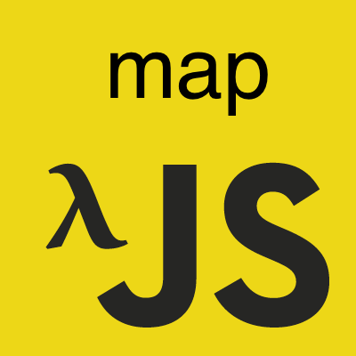

이 포스트는 인프런에서 진행한 유인동 님의 함수형 자바스크립트를 듣고 감명 받아서 쓴 글이다.
사실 underscore, lodash 등 함수형 패러타임으로 코드를 짤 수 있게 끔
미리 이런 함수들을 제공하는 라이브러리들을 쓰고, 이 포스트는 그닥 볼 필요가 없다.
하지만 이런 원리를 알고 접근을 하다보면 위 라이브러리를 쓴다고 하더라도 추가로 필요한 나의 코드를 함수형으로 더 짜기 유용하지 않을까?
map
기본적으로 map은 수집, 원본 데이터들을 어떠한 형태로 가공해서 수집할까의 기능을 한다.
기존 프로그래밍
우선 얻어온 데이터들을 우리가 만든 _filter 함수를 써서 필터링된 결과를 얻은 이후부터 생각해보자.
이제 그 데이터(객체)에서 우리가 원하는 나이나 이름(가공)만 뽑아내보자.
위 로직을 보니 역시 반복문 부분과 배열에 넣는 부분, 그리고 객체에서 어떤 걸 뽑아서 넣을지
요 부분들이 추상화가 가능할 것 같다.
그래서 아래와 같이 함수로 추상화가 가능할 것 같다.
잘 추상화 한 것 같다.
객체의 다른 프로퍼티를 구한다고 할 때도 두 번째 키 인자만 바꿔주면 된다.
읭? 객체 말고 다른 녀석인 경우에는? 배열의 요소에다가 모두 1을 더한 배열을 얻고 싶을 때는?
이런… 추상화의 포커스가 객체의 키 값들을 얻어내는 데만 맞춰져있었다.
다시 함수형 본연의 모습을 되찾을 때가 됐다.
함수형
|
|
하지만 아직 우리에게는 숙제가 하나 남아있다.
filter에서는 딱히 필요성을 느끼지 못해 돌림직한 객체를 건너뛰었지만 이번 map 예제는 객체에서도 나름 쓸모가 있어 보인다.
아래와 같이 객체의 값들을 얻어오고 싶다고 가정을 해보자.
조금 복잡하게 설명했지만 객체는 배열과 같이 for of 구문으로 반복문을 돌릴 수 있는 녀석이 아니다.
왜냐하면 객체는 순서가 없기 때문이다. (사실은 Symbol.Symbol(iterator) 프로퍼티가 없기 때문)
원리가 궁금한 사람은 아래 포스트들을 참고하자.
간단하게 Iterator 포스트 정도만 참고해도 될 것 같다.
- Interface
- Symbol
- Iterator123456const obj = {name: '간장이', age: 255};// Object는 이터러블(반복을 돌릴 수 있는 애)이 아니기 때문에 이터레이터(반복해서 돌릴 수 있는 녀석)가 아니다.// 따라서 for of와 같은 구문을 만나면 오류가 나게 되는 것이다.console.log(_map(obj, v => v));// 물론 아래와 같이 에러를 회피할 수 있지만 위와 같이 쓰는 게 더 간결하지 않은가?console.log(_map(Object.keys(obj), key => obj[key])); // ['간장이', 255]
key와 value의 쌍으로 이루어져있는 돌림직한 객체도 map으로 돌려버릴 수 있게 코드를 좀 손보자.
간단하게 한 줄만 추가해주면 된다.
그럼 이제 바로 다음 포스트인 each를 공부해보자!